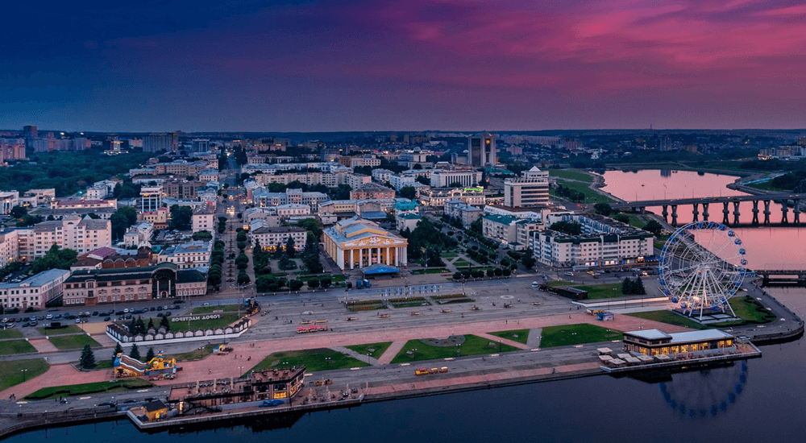

20 августа - День города Чебоксары

День города Чебоксары отмечается 20 августа в честь основания города в 1469 году. Это праздничное событие связано с днем первого упоминания Чебоксар в исторических документах. В этот день жители города и гости участвуют в праздничных мероприятиях, концертах, выставках и спортивных соревнованиях. Традиционно проводятся торжественные парады и шествия, а также ярмарки и культурные мероприятия. День города Чебоксары становится поводом для горожан отметить историю и достижения своего города, поддержать городское сообщество и провести время весело и задорно.